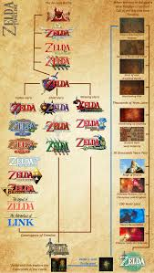

The timline of the Zelda series is a long and complicated story but is a story told by a total of 29 games so far.
The early timeline features Skyward Sword, Ocorina of Time, and two other games that dont have much of an effect on the timeline.
Skyward Sword acts as an intro to the series and Zelda ansd link work together to seal away the antagonist called demise.
In Ocorina of time Demise gets reincarnated as Ganondorf. Ganondorf attempts to get the Triforce (An object that appears multiple times in the zelda timleine)
but in doing so he splits the triforce into three peices then Link and Zelda Once again defeat gannon but this time they seal him in the sacred realm.
The time split is infamously known for making the Zelda timeline overcomplicated and looking more like a root system rather than a line.
The timesplit dosent acually feature any games but is an importand part in the timline and happens when Zelda sends link back in the past so he can re-live his childhood.
The timesplit has three branches the main timline (link is a child) the timline where Link dies and then gets reincarnated (The downfall timline), and the timline where Link is an adult.
The Child Timline Features Majora's Mask, Twilight Princess, and Four Swords Adventures.
In Majoras Mask Link Saves the world from a kid named Majora
In Twilight Princess Link exposes Ganondorfs plan to take over Hyrule and Ganondorf gets banished to the twilight realm where he gives his powers to zant and then later link defeats zant and ganondorf.
In Four Swords Adventures the child timline comes to an end with Link sealing Gannon in the Four sword
he Adult Timeline happens when Link defeats Ganon in Ocarina of Time, but Zelda sends him back to his childhood, leaving the adult world without a hero. Without Link, Ganon returns, and the gods flood Hyrule to stop him, leading to The Wind Waker. Later, in Phantom Hourglass, Link and Tetra search for new lands, and in Spirit Tracks, a new kingdom, New Hyrule, is founded. This timeline focuses on a post-flood world, where Hyrule disappears, and a new civilization rises.
The Downfall Timeline happens when Link loses to Ganon in Ocarina of Time, leading to Hyrule's decline. The Seven Sages seal Ganon away, but the damage is done, and the kingdom struggles to recover. This timeline includes classic Zelda games like A Link to the Past, Link’s Awakening, Oracle of Ages/Seasons, and the original Legend of Zelda. It separates older 2D games from newer 3D titles, shaping a unique version of Hyrule’s history.
The Modern Timeline in The Legend of Zelda includes Breath of the Wild and Tears of the Kingdom. Unlike older timelines, Nintendo hasn't clearly placed these games, leaving their connection to past events uncertain. Some theories suggest the timelines merged into one, while others think these games happen far in the future, with old history fading into legend. This era focuses on a post-Calamity Hyrule, where Link wakes up to a world shaped by ancient battles and lost civilizations
